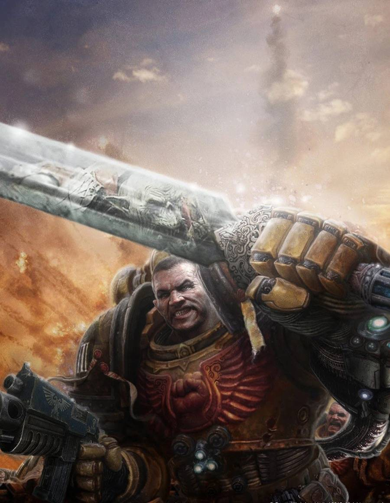

The Forging
| The Forging | |
|---|---|
| "The Golden Age of the Imperium" | |
 A cathedral-spire of a hive world. The age saw the Imperial Creed take hold on nearly every human world | |
| Period | Mid-M32 to the start of M35 |
| Preceded by | Time of Rebirth |
| Followed by | Nova Terra Interregnum |
| Government | The High Lords of Terra, restored 646.M32 |
| Key events | Restoration of the Senatorum Imperialis; Second, Third and Fourth Black Crusades; War of the Confessor; the Pale Wasting; the Howling |
| Characteristics | Expansion beyond the frontiers of the Great Crusade; growth of the astropathic network; rise of the Adeptus Ministorum |
The Forging, called by some Imperial historians the Golden Age of the Imperium, was the age of Imperial history that followed the Time of Rebirth. It began in the middle of the 32nd millennium, after the War of the Beast and the Beheading, and lasted until the start of the 35th millennium, when the Nova Terra Interregnum divided the Imperium. In these two and a half thousand years the Imperium consolidated the realm the Great Crusade had won and extended it to many worlds the Crusade had never reached.[1]
Most Imperial scholars regard the Forging as the high point of the Imperium after the Heresy, in its culture, its government and its technology. The Adeptus Astra Telepathica built a reliable network of astropathic communication, the rediscovery of an STC database slowed the decline of Imperial technology, and the Adeptus Ministorum carried the Imperial Cult to nearly every human world. The Ministorum's power grew with its reach, and by the end of the age it had become a rival to the Administratum in the government of the Imperium.[2]
The age had its wars and disasters. Abaddon the Despoiler launched three Black Crusades in it, the Ministorum fought its first Wars of Faith, and two catastrophes of the 34th millennium, the Pale Wasting and the Howling, destroyed scores of worlds and a billion astropaths.
Name and extent
[edit]The name is used in the chronological tables of the Codex Imperialis for the period in which the institutions created after the Heresy were "forged" into a working state. The start of the age is usually dated to the restoration of the High Lords in 646.M32, a century after the Beheading, and its end to the declaration of the Ur-Council of Nova Terra in the early 35th millennium. Some chronologies begin it with the War of the Beast itself.[1]
Restoration of the Senatorum Imperialis
[edit]The murder of the High Lords in 546.M32 left the government of the Imperium in disorder. The Grand Master of Assassins ruled as Lord Protector for several decades and was killed by Space Marines in the end, and the struggle for the empty seats of the Senatorum Imperialis went on for years after. In 646.M32 Agnathio, Chapter Master of the Ultramarines, came to Terra with the leaders of more than fifty other Chapters. They met the claimants in a locked council. What was said is not recorded, but when the Space Marines left there were again twelve High Lords of Terra, and the quarrel did not resume in public.[1][a]
The restored council governed for most of the age without serious challenge. Imperial historians attribute the stability of the Forging largely to the authority the Adeptus Astartes lent it at its start.
Consolidation and expansion
[edit]Communication
[edit]The Imperium could not be governed without communication, and in the Forging the Adeptus Astra Telepathica set up astropathic choirs on countless worlds. Great relay stations were established on the best-defended worlds of each segmentum, among them Armageddon, Bakka and Macragge, and messages could pass across the galaxy in weeks rather than years. The network was never perfect, for astropathic messages could be lost or garbled by Warp storms, but it allowed the High Lords to direct the Imperium as a whole for the first time since the Heresy.[1]
Expansion
[edit]The Adeptus Terra used the age to bring under Imperial rule the many human worlds the Great Crusade had passed over or never found. Explorator fleets and Rogue Traders charted new regions, and Imperial armies reclaimed worlds that had rebelled during the Heresy or been lost to aliens since. The borders of the Imperium were pushed further than the Great Crusade had carried them. One expedition was a warning: Admiral Usurs of the Imperial Navy, whom the High Lords judged too powerful to execute, was sent in 265.M33 on an Explorator mission into the void beyond the galaxy. For two decades his astropaths reported the conquest of new star systems. Then the reports stopped, and none of the worlds he named was found again.[3]
Technology
[edit]Imperial technology had declined steadily since the Heresy. In the Forging the decline slowed when an STC database from the Dark Age of Technology was found in the Cana System. The patterns it held were copied to forge worlds across the Imperium and gave rise to a revival of manufacture and trade.[1]
The Adeptus Astartes
[edit]New Foundings kept the Space Marines at strength. The Fourth Founding, ordered after the War of the Beast, had already raised as many Chapters as the gene-vaults of Terra could support. Further Foundings followed in the 33rd and 34th millennia, among them the one that created the Howling Griffons in about 220.M33, and the Eighth Founding of the mid-34th millennium. See Third Founding#List of Foundings.[4]
The Ministorum
[edit]The Ecclesiarchy, which had become the state church during the Time of Rebirth, grew throughout the Forging. Its missionaries brought the Imperial Creed to the newly reclaimed worlds, and its cathedrals rose in every hive. The Ecclesiarch's seat among the High Lords had been made permanent, and the church used the position to extend its influence over secular government.[2]
The Ministorum also began to use force. In 077.M33, using the political strength it had gained after the War of the Beast, the church fought the War of the Confessor, the first of its Wars of Faith, and added many shrine worlds to its holdings. In the same period the Temple of the Saviour Emperor, which dominated the church, suppressed the rival Confederation of Light, whose adherents went into hiding for three thousand years.[2]
Wars and disasters
[edit]
The Black Crusades
[edit]Abaddon the Despoiler led three Black Crusades out of the Eye of Terror during the Forging. In the Second, in 597.M32, he laid a curse on the worlds of the Belis Corona Sector and destroyed dozens of cruisers in its shipyards before the Imperium could respond. The Third, in 909.M32, sent the daemon prince Tallomin in a frontal assault on the Cadian Gate, which drew in regiments and Chapters from across the Segmentum Obscurus until the Space Wolves drove the daemon back into the Warp. Under cover of the attack Abaddon desecrated the tomb of Saint Gerstahl, whose rising had been prophesied. The Fourth, in 001.M34, stormed the citadel of the Kromarch on El'Phanor and extinguished his line.[5]
Other wars
[edit]The registers of the age list many wars of which nothing else is known: the Astropath Wars of 888.M32, the Firestorm of 910.M32, and the Siege of Eternity's Gate of 313.M33. The War of the False Primarch (780–860.M33) was a long internecine conflict whose record has been so thoroughly purged that it survives mostly as rumour. In 615.M33 the pre-Heresy cruiser Blade of Infinity emerged from the Warp, apparently from twenty thousand years in the past, and its later appearances were followed each time by traitor incursions. In 831.M33, the Year of the Ghosts, the honoured dead of the Segmentum Solar were reported to have risen to drive back the terrors of the Warp.[1]

The Pale Wasting
[edit]In the early 34th millennium a threat rose beyond the Ghoul Stars that the Imperium remembers only as the Pale Wasting. The surviving fragments speak both of a star-spawned plague and of nightmare engines that killed the populations of whole sectors. Scores of worlds and several Space Marine Chapters were lost. The Novamarines were among the Chapters that ended it, and a stele in the Imperial Palace thanks them for having "unmade that which cannot die". Most of the evidence was destroyed by the Inquisition.[6]
The Howling
[edit]The worst disaster of the age came in 401.M34. The Black Templars ended the Catelexis Heresy by killing the Cacodominus, an alien cybernetic psyker that had controlled the populations of thirteen hundred star systems. Its death scream, magnified by the Warp, burned out the minds of a billion astropaths and distorted the light of the Astronomican. Millions of ships were lost, and whole sub-sectors, cut off from Terra, fell back into barbarism. The network that had been the great achievement of the Forging was broken in a single day, and it took centuries to rebuild.[1]
Later in the millennium a Warp storm from the Eye of Terror in 666.M34 produced the first of the Warp Stars, which drew in ships and small planets. In 934.M34 the Imperium received warnings from the Aeldari of Ulthwé, the meaning of which has never been made public.[1]
End of the age
[edit]By the end of the 34th millennium the strains of the age were visible. The astropathic network had not recovered from the Howling, the frontier worlds felt themselves governed by distant officials who did not know them, and the Ministorum's power had begun to alarm the other Adepta. In the early 35th millennium the Ur-Council of Nova Terra repudiated the authority of the High Lords and took the Segmentum Pacificus for itself. The Nova Terra Interregnum ended the Forging.[1]
Legacy
[edit]The Forging is remembered as the last age in which the Imperium grew in most respects. Ecclesiarchy writers praise it as the age in which humanity came to know the Emperor as its god. Administratum historians point instead to the stability of the restored council and to the communications network. Both agree that the growth of the Ministorum's power in the Forging prepared the way for the crises of the 35th and 36th millennia, the Cataclysm of Souls and the Age of Apostasy.[2]
Timeline
[edit]The principal dated events of the age. See also 32nd millennium, 33rd millennium and 34th millennium.
| Date | Event |
|---|---|
| 597.M32 | The Second Black Crusade curses the Belis Corona Sector. |
| 646.M32 | Agnathio restores the council of the High Lords of Terra; the age begins. |
| 742.M32 | First Battle of The Fang on Fenris. |
| 888.M32 | The Astropath Wars. |
| 909.M32 | The Third Black Crusade against the Cadian Gate. |
| 910.M32 | The Firestorm. |
| 077.M33 | The War of the Confessor, first War of Faith. |
| c. 220.M33 | The Howling Griffons founded. |
| 265.M33 | Admiral Usurs sent into the void beyond the galaxy. |
| 313.M33 | The Siege of Eternity's Gate. |
| 615.M33 | The Blade of Infinity emerges from the Warp. |
| 780–860.M33 | The War of the False Primarch. |
| 831.M33 | The Year of the Ghosts in the Segmentum Solar. |
| 001.M34 | The Fourth Black Crusade storms El'Phanor. |
| Early M34 | The Pale Wasting from the Ghoul Stars. |
| Mid-M34 | The Eighth Founding. |
| 401.M34 | The Howling kills about a billion astropaths. |
| 666.M34 | The first Warp Stars. |
| 934.M34 | The warnings of Ulthwé. |
| Early M35 | The Nova Terra Interregnum ends the age. |
See also
[edit]Notes
[edit]- ^ The Ultramarines' archive and the Administratum's register both record the council of 646.M32, but neither preserves its minutes. Several Chapters that took part have sealed their own accounts.
References
[edit]- ^ a b c d e f g h i Codex Imperialis (rev. 980.M41). Adeptus Terra. Chapter on the Forging.
- ^ a b c d Liber Ecclesiasticus (M37). Adeptus Ministorum.
- ^ Annals of Battlefleet Solar (M33). Imperial Navy archive, Terra.
- ^ Register of Foundings (rev. M41). Adeptus Terra and Adeptus Mechanicus, Terra and Mars.
- ^ Liber Malefica: The Crusades of the Despoiler (sealed). Ordo Malleus.
- ^ Stele of the Novamarines (M34). Imperial Palace, Terra.